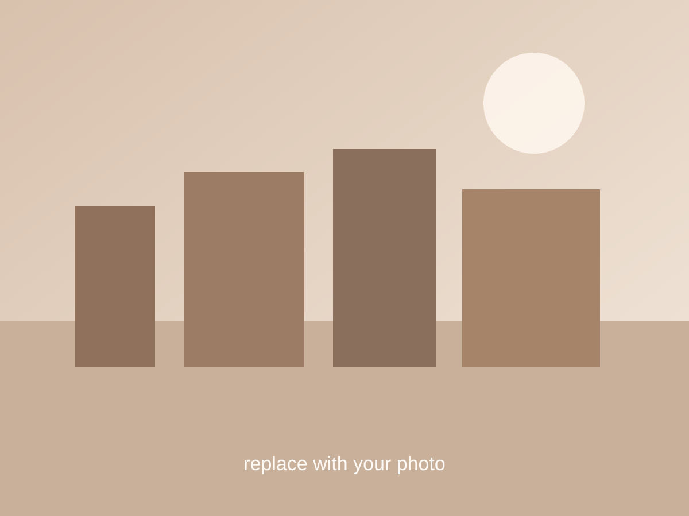

雨后的傍晚，城市像被重新擦亮了一次
路灯刚刚亮起来的时候，我突然很想把这一刻留住。地面还有水，空气里有一点潮， 但整条街意外地安静。拍下来的时候没有想太多，回看照片时才意识到， 我想记住的其实不是街道本身，而是那种慢下来以后才看见的柔和感。
这里就是你以后写“自己的心情”的位置。可以很短，只要是真实的就很好看。
June 2026
这里改成了更适合你的记录方式：先放图片，再写当时的心情、场景和想记住的话。以后每次新增内容，只需要复制一张图文卡片。

路灯刚刚亮起来的时候，我突然很想把这一刻留住。地面还有水，空气里有一点潮， 但整条街意外地安静。拍下来的时候没有想太多，回看照片时才意识到， 我想记住的其实不是街道本身，而是那种慢下来以后才看见的柔和感。
这里就是你以后写“自己的心情”的位置。可以很短，只要是真实的就很好看。
这一类记录不一定需要很正式。你可以写拍摄地点、天气、那天发生了什么， 也可以只写一句当时脑子里闪过去的话。摄影板块最动人的部分， 往往就是这些很私人的感受。
How To Add
你后面新增摄影记录时，建议按下面这个顺序：
如果你愿意，之后你只要把图片文件名和文字给我，我可以继续帮你排成这种风格。